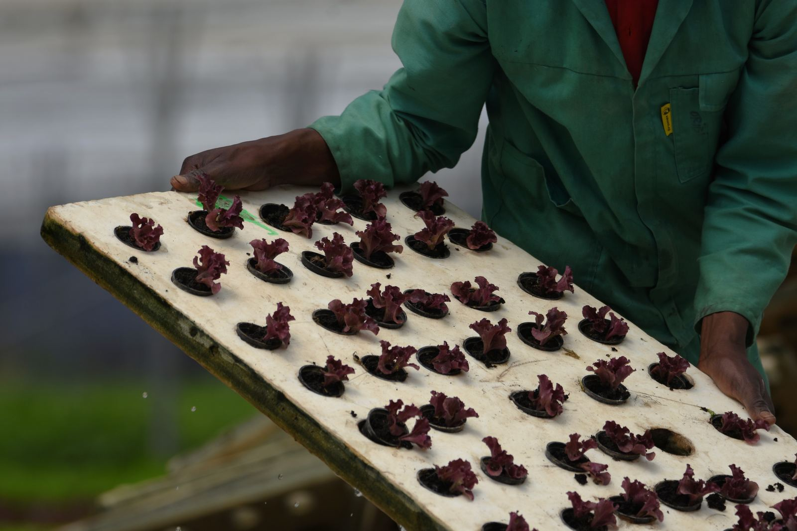
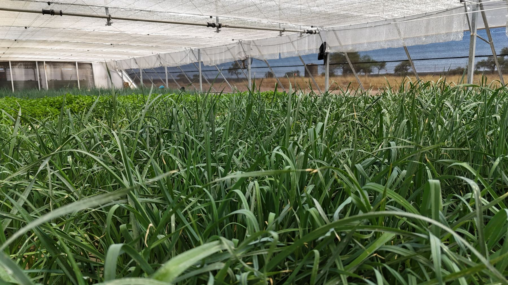

Washed. Ready to eat. Grown here.
More than 20 lines of lettuce, herbs and greens, harvested and packed on the farm. Lettuce, herbs, celery, leeks and spring onions.


Pillow packs, washed and ready to eat, in 130 g and 200 g. Butter and Cos are also sold as whole heads.
- Butter
- Red Butter
- Crisp
- Frilly
- Red Oak
- Green Oak
- Lolla Rosso
- Cos
- Little Gem
- Mixed Leaf
- Crispy Crunch
- Lettuce & Herb Mix
Spinach, Cut Spinach and Baby Spinach, in pillow packs.
Clamshell packs of mint, basil, curly parsley, Italian parsley, coriander, dill, chives and rocket.
Celery, leeks and spring onions, sleeved in bunches.
Heat-sealed bowls made on the farm, in single-serve, for-two and for-four sizes.
The pack protects the leaves.
The leaves last longer in your fridge. They are already washed, so there is nothing to do but open it. And because the lettuce was cut a short drive from the store, it starts fresher than anything that crossed a border to get there.
Look for the ORIBI label at Checkers, SPAR, Food Lover's Market and Metro.
Buying for a store or a kitchen? Talk to our sales team.